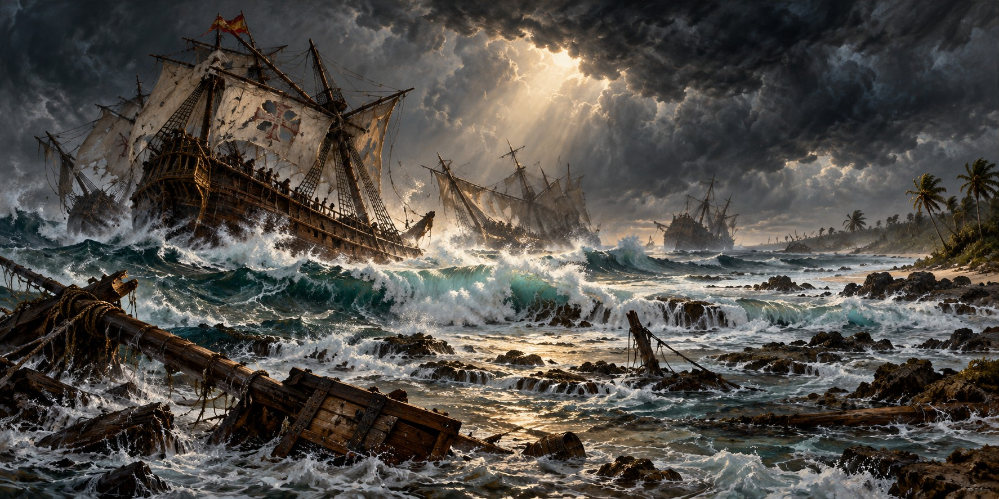

Shipwrecks of the Florida Coast
How Hurricanes Turned Florida’s Waters Into a Graveyard for Ships

“We were at the mercy of the wind and water, always driven closer to shore,” wrote Miguel de Lima, a Spanish ship owner caught in a hurricane off Florida in 1715. “Having then lost all of our masts, all of the ships were wrecked on the shore, and with the exception of mine, broke to pieces.” De Lima survived. More than a thousand others did not. His ship, the Urca de Lima, is one of the wrecks from that disaster the State of Florida now protects as an underwater archaeological preserve.
An Early Colonial Shipwreck
In 1559 Tristán de Luna y Arellano brought more than fifteen hundred people aboard eleven ships from Veracruz to Pensacola Bay to found a colony. Before the fleet had unloaded, a hurricane struck the anchored ships, destroying most of them and killing some of the colonists. The colony was abandoned by 1561.
The wreck site, now known as the Emanuel Point shipwreck, stayed lost for more than four centuries until a Florida archaeological survey found it in 1992, recovering a well-preserved lower hull and thousands of artifacts. Archaeological research connects the surviving hull and artifacts to the colony’s history.
The Atocha and the Search for Its Cargo
The Nuestra Señora de Atocha sank during a hurricane in 1622. Mel Fisher’s team located its main deposit in 1985 after years of searching. The Atocha and its sister ship, Santa Margarita, link the Keys to Spain’s Atlantic trade and to modern debates about treasure recovery, ownership and archaeological evidence.
Eleven Ships, Fifty Miles of Coast
On July 31, 1715, a hurricane caught a Spanish treasure fleet of twelve ships as it left the Bahama Channel. Eleven were sunk or driven onto reefs along roughly fifty miles of coast from present-day Fort Pierce to Wabasso. Of about twenty-five hundred sailors and passengers, more than a thousand died, including the fleet’s commander, Juan Esteban de Ubilla. Only the French ship Griffon escaped.
Spanish salvage began soon after the disaster. Divers and recovery crews worked on the wrecks, while valuable cargo also attracted raiders. The aftermath is part of the story: a wreck could remain economically and politically important long after the weather cleared.
Friday the Thirteenth
In July 1733, another Spanish fleet left Havana and encountered a hurricane near the Florida Keys. Ships were scattered along the island chain and survivors had to find shelter on low islands. San Pedro, a Dutch-built vessel in that fleet, is now a protected underwater archaeological preserve south of Indian Key.
Three Centuries of Coins Still Washing Ashore
Coins and other objects from the wrecks have continued to emerge through storms, shoreline change and organized salvage. A recovered coin is more than evidence of wealth: its location and relationship to other material can help researchers understand a ship, a voyage and the forces that scattered its cargo.
A Storm Uncovers a Wreck
In late 2022, in the wake of Hurricanes Ian and Nicole, a mysterious structure began emerging from a Florida beach. It was identified as the wreckage of a nineteenth-century cargo-carrying sailing vessel that had lain buried for well over a century. Hurricanes have long rearranged Florida’s shoreline, and occasionally they hand back a piece of the history the water took.
Quick Facts
| Earliest documented wreck | 1559 Luna expedition, Pensacola Bay |
|---|---|
| Emanuel Point wreck | Discovered in 1992; studied through underwater archaeology |
| Atocha (1622) | Sank in a hurricane; found by Mel Fisher in 1985 after a 16-year search |
| 1715 Plate Fleet | 11 of 12 ships lost along about 50 miles of coast; more than 1,000 of about 2,500 died |
| 1733 fleet | Hurricane scattered ships along the Florida Keys |
| Protected wrecks | Urca de Lima (1715) and San Pedro (1733) are Florida Underwater Archaeological Preserves |
| 2022 discovery | Ian and Nicole uncovered a buried 19th-century wreck on a Florida beach |
Did You Know?
The wreck of the Luna expedition’s hurricane-shipwreck disaster lay lost for more than four centuries.
Only one ship in the 1715 fleet, the French Griffon, escaped the storm.
Vocabulary
Plate fleet: a Spanish convoy that carried silver and other treasure from the Americas to Spain.
Galleon: a large, multi-decked sailing ship used by Spain for war and trade.
Underwater archaeological preserve: a protected shipwreck site managed by the State of Florida for visitors and research.
Discussion Questions
1. Why were so many ships lost to hurricanes before weather forecasting?
2. What might a recovered coin tell us about a ship and its voyage?
Related Articles
FLH-0030 — The Storm That Destroyed Flagler’s Railroad
FLH-0023 — Storm Surge: Florida’s Greatest Threat
FLH-0012 — Hurricane Ian (2022)
FLH-0032 — When the Ferries Stopped Running
Sources
NOAA Atlantic Oceanographic and Meteorological Laboratory. “300th Anniversary of Spanish Silver Fleet’s Fatal Encounter with a Hurricane.” aoml.noaa.gov
U.S. National Park Service. “The Spanish Treasure Fleets of 1715 and 1733: Disasters Strike at Sea.” nps.gov
Florida Center for Instructional Technology, University of South Florida. “Florida’s Shipwrecks and Treasures.” fcit.usf.edu
Florida Museum of Natural History. “Down Like Lead” exhibit. floridamuseum.ufl.edu
1715 Fleet Society. “History.” 1715fleetsociety.com
CBS News. “Treasure Hunters Say They Recovered Hundreds of Silver Coins from Iconic 1715 Shipwrecks off Florida.” cbsnews.com
ABC News / Smithsonian Magazine. “Buried 19th-Century Shipwreck Likely Uncovered by Hurricanes on Florida Beach.”
Florida Museum — Down Like Lead shipwreck exhibit
NPS — Spanish treasure fleets of 1715 and 1733